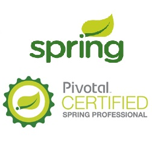
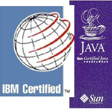

JSP ใช้ที่ไหน ?
องค์กรใหญ่ระดับโลก ใช้ JSP เช่น Intel , VMWare, Adobe , Oracle , Samsung , IBM , Cisco , Redhat , EMC , etc.
ธนาคาร และ สถาบันการเงินทั่วโลก และธนาคารไทย ส่วนใหญ่ใช้ Java ในการพัฒนาระบบการเงิน
วิชาเว็บเซอร์วิส มีอะไรบ้าง?
หลักๆ ในวิชาเว็บเซอร์ิส คือ RESTFul , SOAP/WSDL/UDDI , Java EE , JSP/Servlet , Spring(WS/Rest/MVC/IoC/AOP/ORM/Security)
Spring(Integration/Webflow/Testing/Transaction) , Hibernate , JPA , EJB , JDBC , SOA/ESB/JMS ,etc เว็บต้นกำเนิด Spring.
โพรไฟล์ผู้สอน?
สมาน Samarn , MSc.IT, Pivotal Spring Certified , Oracle Certified Expert , IBM Certified Integration Developer ,Sun Certified Java Programmer , Cisco Certified Network Associate, Microsoft Certified Technical Specialist ติดต่อผู้สอน!
คุณวุฒิ
Portfolio item 1
see detail

Portfolio item 2
see detail

แหล่งความรู้ ? สามารถหาความรู้จาก see more หรือ ดูตัวอย่างการเชื่อมต่อฐานข้อมูลหรือ สไลด์
เกี่ยวกับ Spring
Spring Framework 1. Spring Framework Architecture 2. Spring MVC Request Life Cycle 3. Spring DispatcherServlet Configuration 4. Spring 5. Spring IoC Containers 6. Spring Bean Definition 7. Spring Bean Scopes 8. Spring Bean Life Cycle 9. Spring Bean Post Processors 10. Spring Bean Definition Inheritance 11. Spring Dependency Injection 12. Spring Injecting Inner Beans 13. Spring Injecting Collection 14. Spring Beans Auto-Wiring 15. Spring Annotation Based Configuration 16. Spring Java Based Configuration 17. Event Handling in Spring 18. Custom Events in Spring 19. AOP with Spring Framework 20. Spring JDBC Framework 21. Transaction Management 22. Spring Web MVC Framework 23. Spring Security 24. Logging with Log4J
LEARN MORE.
วาทะ จาก ประธานอินเทล ,ประธานไมโครซอฟท์ , และ นักวิทยาศาสตร์ ระดับโลก
Only the paranoid Survive : Andy Groove , INTEL
Be nice to nerds. Chances are you’ll end up working for one. : Bill gate , Microsoft
Imagination is more important than knowledge : Einstein
ทั้งหมดนี้ และ ต่อไป เป็นสิ่งที่ อาจารย์สมาน ถ่ายทอดความรู้และประสบการณ์ ให้ด้วยใจ